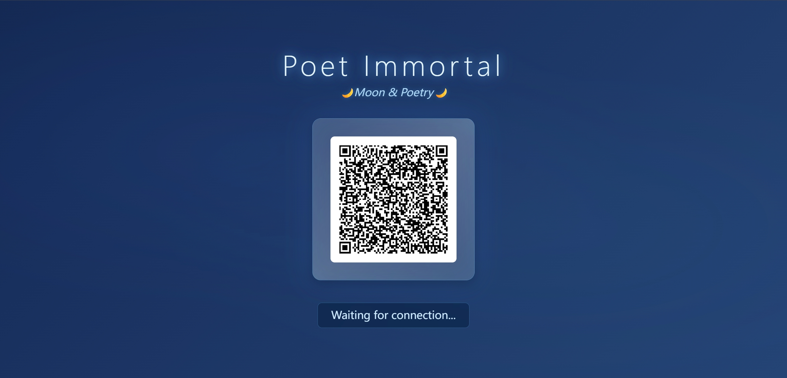
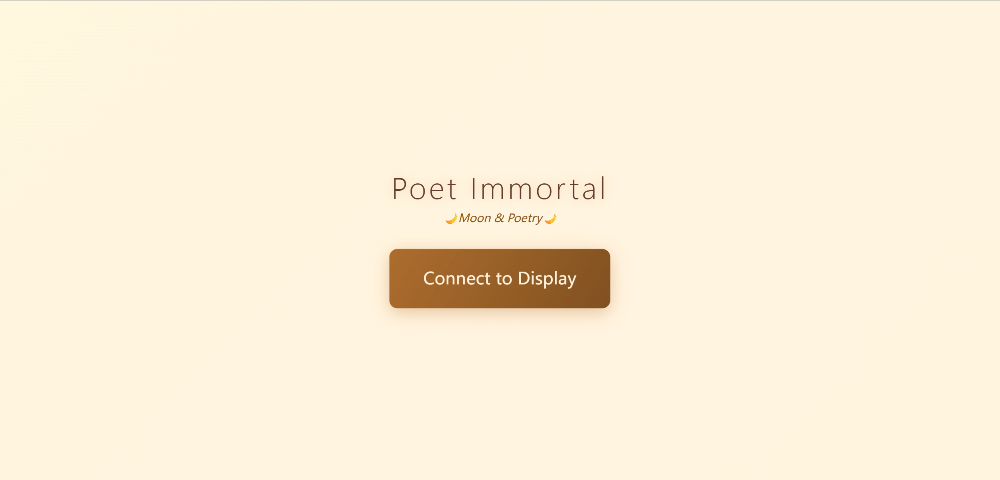

LyBi.
Poet Immortal — Reimagining Waiting Through AI and Poetry
OPEN INTERACTIVE PROTOTYPE ↗
About LyBi.
LyBi is an LLM-powered conversational experience designed to reimagine waiting in public spaces. Inspired by the Chinese poet Li Bai, it invites people to observe their surroundings and co-create poetic conversations, exploring how imagination and interaction can reshape the subjective experience of time.
Interaction Experience.


Development Approach.
The interactive prototype was developed through a combination of AI-assisted vibe coding and hands-on coding and iteration. AI-generated code was reviewed, adjusted, and refined manually to develop the interface, interaction flow, and prototype behaviour.
Have a Conversation with LyBi.
Visit the online prototype to explore the interface and experience the poetic conversational concept. Availability of the live LLM connection depends on the TU/e hosting environment.
VIEW ONLINE PROTOTYPE ↗
Eindhoven University of Technology (TU/e)
January 2026
Team: Hanxu Yu, Tobias Visch, Ruotong Zhang